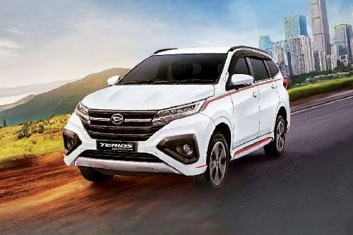

.jpg)
Daihatsu Terios
TENTANG DAIHATSU TERIOS
Persaingan SUV kelas bawah semakin sengit dengan hadirnya Suzuki XL7 dan Mitsubishi Xpander Cross. Menurut Daihatsu, mereka sudah siap dengan perbekalan yang dimiliki Terios. Ini karena Daihatsu punya varian yang cukup banyak. Contoh, ada varian yang diimbuhi 'Deluxe', dan membuat Terios seolah memiliki varian yang sangat beragam.
Ubahan terakhir yang diberikan adalah pada September 2021. Efisiensi, dan kenyamanan serta keamanan berkendara jadi fokus pengembangan mereka. Kini, Daihatsu Terios sudah dilengkapi dengan fitur pemati-nyala mesin otomatis saat kendaraan diam.
Untuk meningkatkan keamanan berkendara, diberikan pula fitur VSC (Vehicle Stabilisation Control) System, yang akan menjaga kestabilan kendaraan saat bermanuver, juga HSA (Hill Start Assist), sebuah pemandu rem yang akan menjaga mobil untuk tak bergerak selama beberapa detik ketika kaki diangkat dari rem waktu berada di medan menanjak atau menurun.
Kalau Anda pikir Around View Camera bukan fitur penting, maka kami merekomendasikan Daihatsu Terios R biasa (tanpa Deluxe) sebagai varian yang paling pas. Varian ini sudah punya head unit 2DIN yang memiliki kemampuan memutarkan beragam format audio/video dan juga mirroring gadget. Masih ada lagi beragam fitur penunjang kenyamanan lainnya, dan jangan lupa, fitur keselamatannya juga lengkap.
Berikut ini adalah kelebihan dan kekurangan Daihatsu Terios :
Kelebihan :
- Eksterior Daihatsu Terios Kekinian, Lebih Stylish
- Fitur Keselamatan Mumpuni
- Memiliki Berbagai Tipe, Konsumen Punya Pilihan Lebih Banyak
- Handling Lebih Baik Berkat Rear Wheel Drive
- Dealer dan Bengkel Daihatsu Terios Resmi Mudah Ditemukan
- Ground Clearance Tinggi, Andal di Segala Medan
- Bangku Praktis Dilipat Berkat Fitur One Touch Tumble
Kekurangan :
- Mesin Daihatsu Terios Kurang Bertenaga
- Pengaturan AC Masih Manual
- Belum Menggunakan Transmisi CVT, Relatif Boros Bensin
- etak Bagasi Tinggi, Sulit Memindahkan Barang Bawaan
Daftar Harga
| Harga | Varian | |
|---|---|---|
| CC | Tipe | |
| 232,3 Juta OTR | 1,5 MT | X |
| 242,4 Juta OTR | 1,5 Deluxe MT | X |
| 252,8 Juta OTR | 1,5 Deluxe AT | X |
| 264,8 Juta OTR | 1,5 MT | R |
| 274,9 Juta OTR | 1,5 Deluxe MT | R |
| 275,3 Juta OTR | 1,5 AT | R |
| 276,9 Juta OTR | 1,5 Custom MT | R |
| 285,4 Juta OTR | 1,5 Deluxe AT | R |
| 287,4 Juta OTR | 1,5 Custom AT | R |